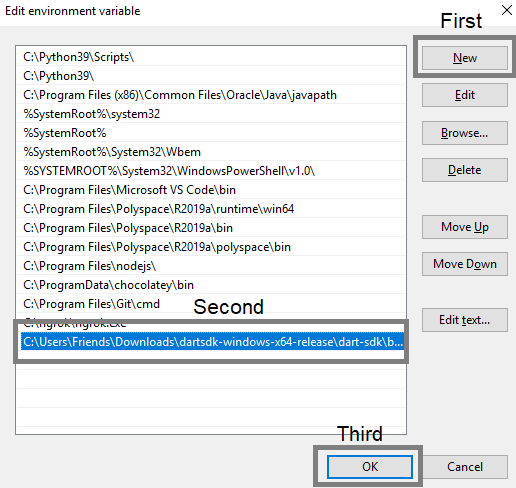
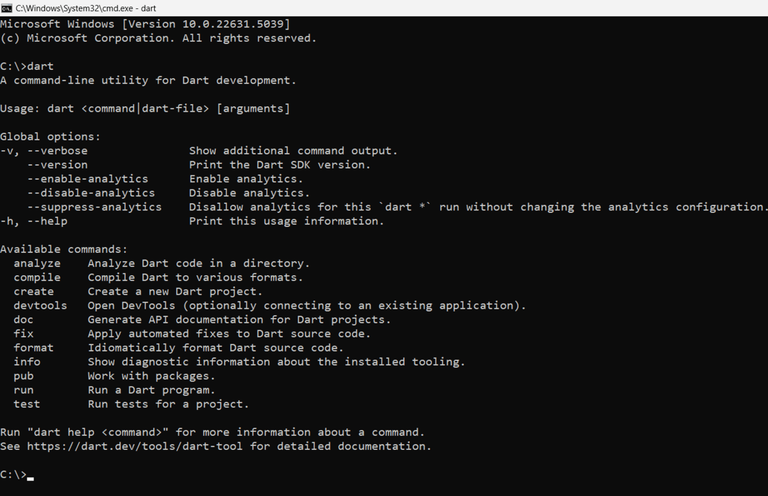
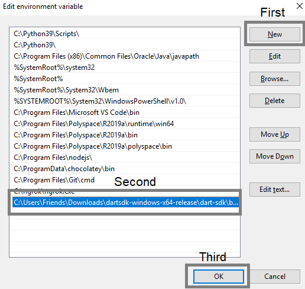
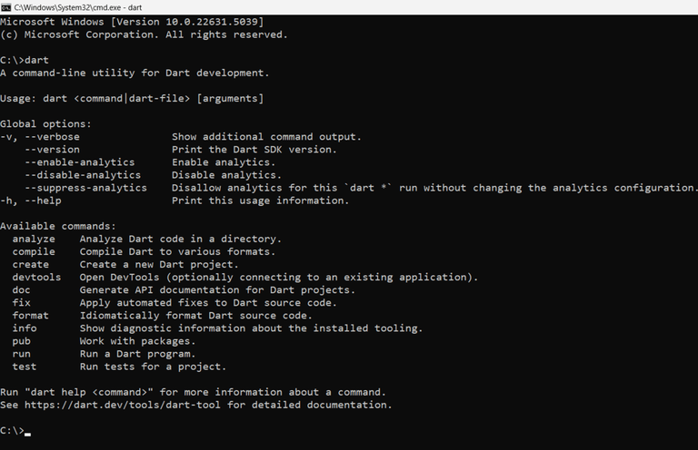

Dart is an open-source, client-optimized language for building mobile, desktop, and web apps. It powers frameworks like Flutter for cross-platform app development.
Grab Dart SDK or Flutter SDK (includes Dart):
 



.dart extension. Use dart run yourfile.dart to run scripts.